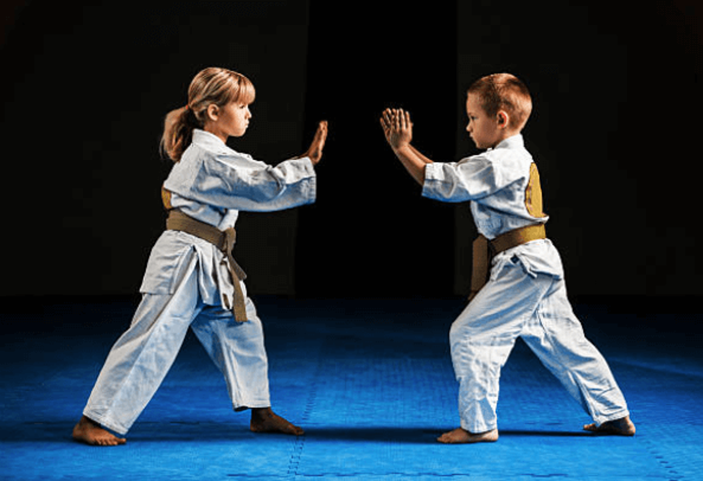
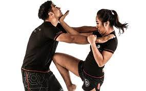

- Nuestras Clases -
Utilizacion de espada
En nuestra escuela de artes marciales el manejo de espadas es una de nuestras actividades más interactivas con los estudiantes.
Artes marciales
Nuestras clases de Artes marciales son clases impartidas por profesionales en forma de deporte para adolescentes y más pequeños.
Defensa personal
La defensa personal es muy importante tanto para jovenes como para adultos, si desea aprender defensa personal unase a una de nuestras clases.
- Nuestros Alumnos -
Los jovenes que asisten a nuestras clases y demuestran una gran capacidad para las artes marciales deciden si entrar en los torneos que se hacen cada año para demostrar la capacidad de cada estudiante que ha ido adquiriendo durante todo el tiempo que estuvo participando durante las clases y tambien se hacen torneos con otras escuelas de Artes marciales para medir la capacidad de los estudiantes con otro tipo de oponente al que esta acostumbrado a combatir normalmente. A continuación se le muestra una lista de los torneos ganados por los estudiantes.
| N° | Nombres | Apellidos | Edad | Torneos ganados |
|---|---|---|---|---|
| 1 | Carlos Armando | Palma Aparicio | 17 | 8 |
| 2 | Andrea Angelica | Urbina Paz | 15 | 7 |
| 3 | Ana Patricia | Gómez Alas | 19 | 5 |
| 4 | Esteban Andrés | Urrutia Zelaya | 18 | 3 |
| 5 | Marvin Alejandro | Borotana Valencia | 14 | 2 |
- Galardones -
-
1- Ganadores de Oro.
- a. Carlos Armando Palma Aparicio
- b. Andrea Angelica Urbina Paz
-
2- Ganadores de Plata.
- a. Ana Patricia Gómez Alas
- b. Jose Ruben Martinez Leon
-
3- Ganadores de Bronce.
- a. Esteban Andrés Urrutia Zelaya
- b. Marvin Alejandro Borotana Valencia